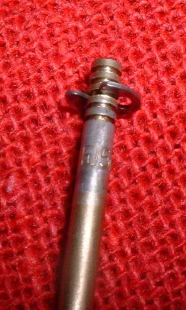
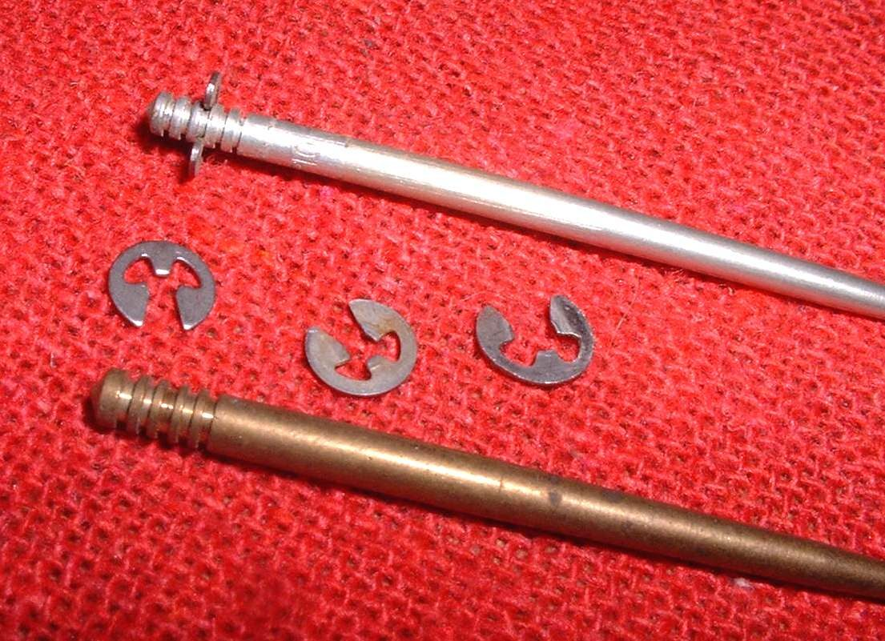
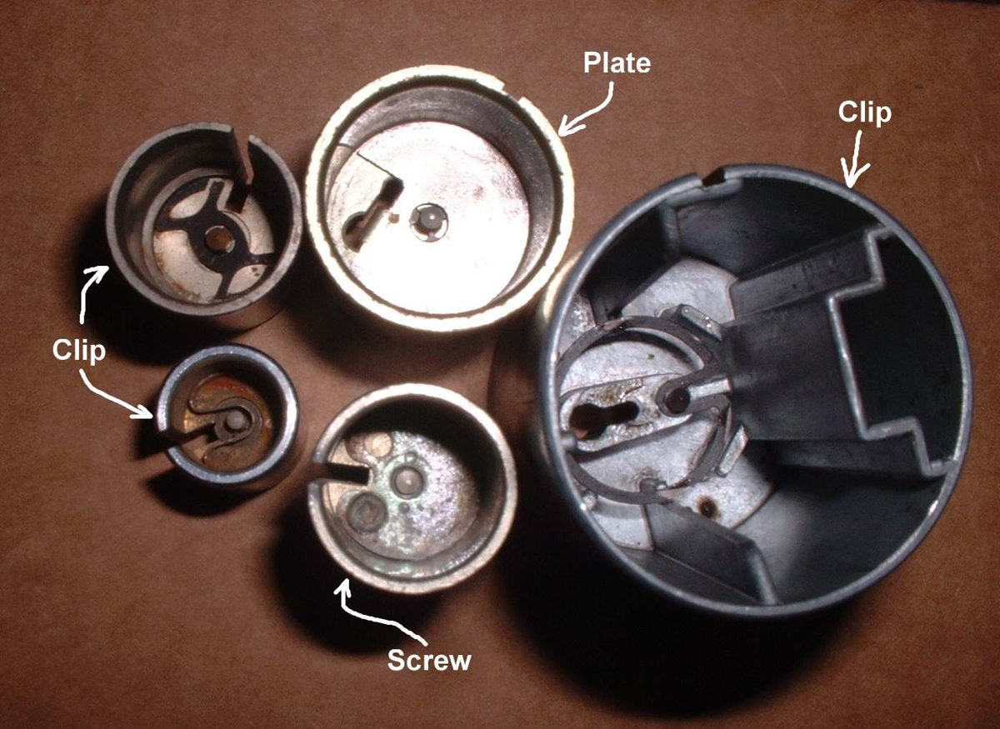
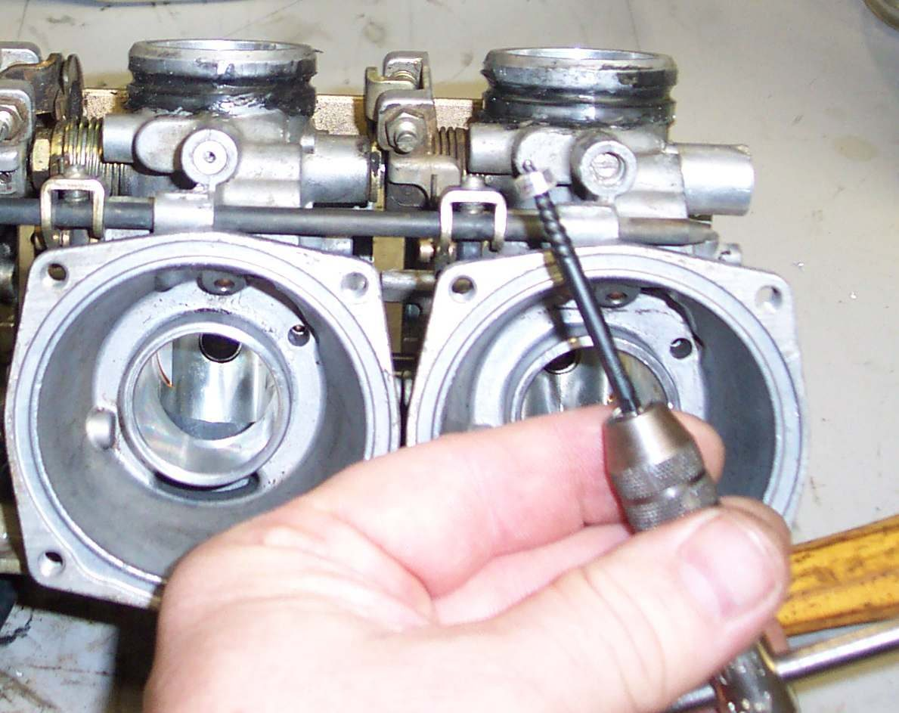

The jet needle rides in the throttle slide and passes into the needle jet. It controls the mixture from just above idle to about three quarters throttle. A clip in one of several grooves at the top of the needle sets how deep the needle sits. This is the simplest change to make to the mixture, and it costs nothing. Change one groove at a time.
Safety
- Fuel is flammable. Turn off the tap, and keep flames away.
- Do not touch the rubber diaphragm with cleaner.
You need
- The slide out of the carburettor. See Remove and refit a carburettor with stiff rubber boots, or on some bikes the top can come off with the carburettor still fitted.
- Your manual's standard groove position. Use the value in your bike's manual.
Steps
- Remove the top cover, spring and slide. Note which way the slide goes in. A slide fitted backwards can jam the throttle open.
- Take out the needle. Many are held by a clip, some by a small screw or by a plate held in by the throttle spring.
- Note the groove in use. Count from the top.
- To make the mixture richer, put the clip in a groove nearer the bottom of the needle. This raises the needle in the needle jet. To make it leaner, put the clip higher up the needle. This lowers the needle.
- Many newer bikes have a needle with one groove only. A small washer under the clip raises the needle and richens the mixture. There is no equivalent for leaning it, except a different needle with several grooves, of the same size and taper, if one can be found.
- Refit the needle, slide, spring and cover.
- Test ride and read the spark plug. See Read a spark plug.
Check your work
- Smooth pick-up from quarter to three quarter throttle, with no stumble or flat spot.
- Plug colour matches a normal one after a steady ride at that throttle.
If it did not fix the problem
- Check the idle circuit and the main jet: Adjust carburettor idle speed and mixture and Change the main jet and read the plug.
- Rough running remains: Flat spot in acceleration.